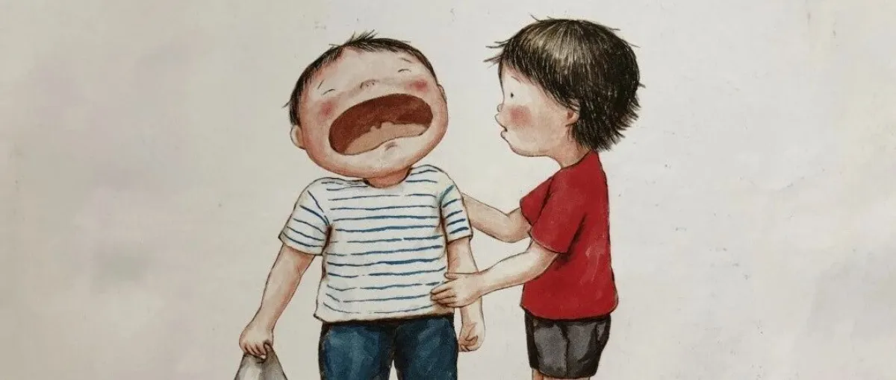
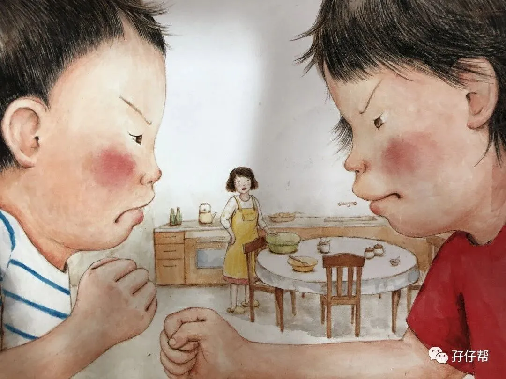
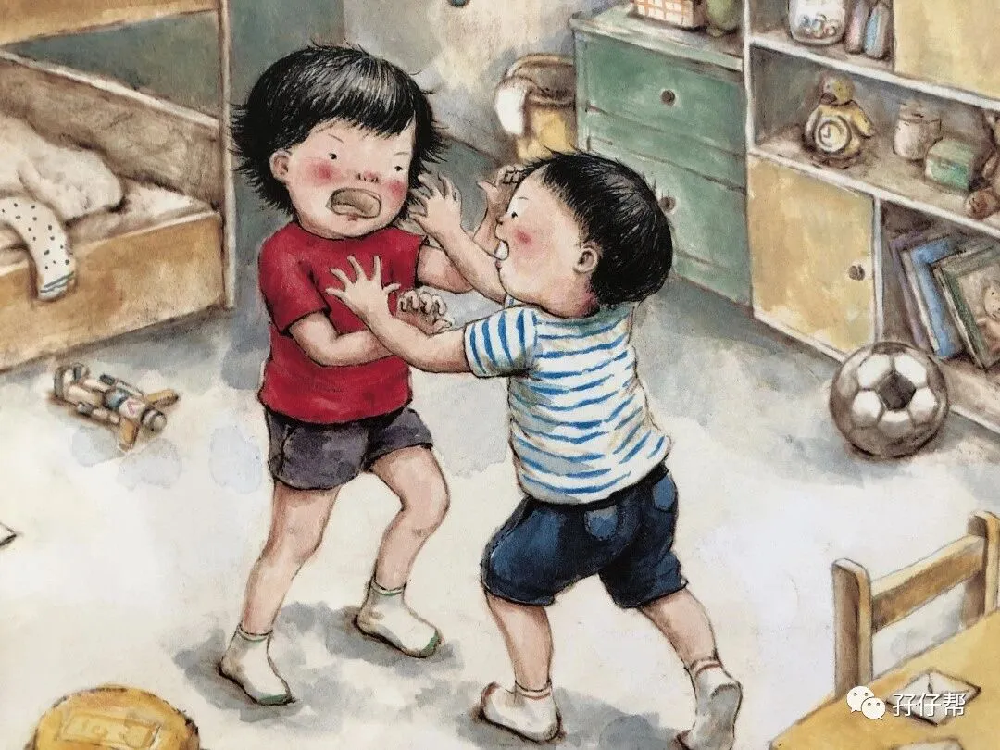
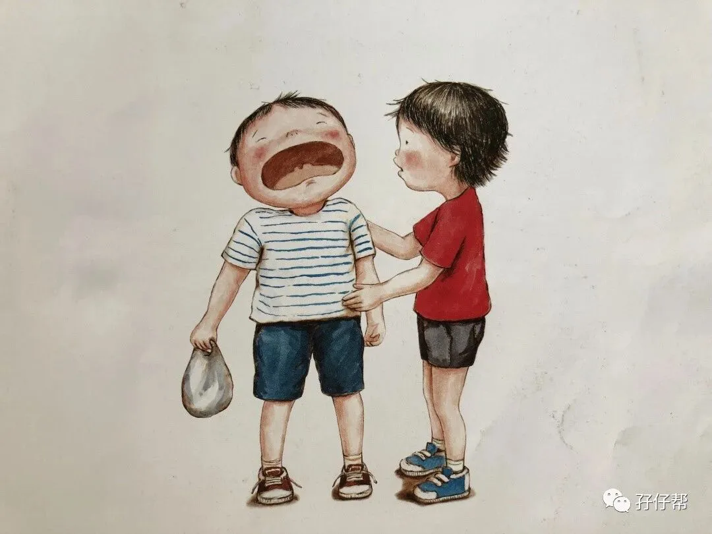
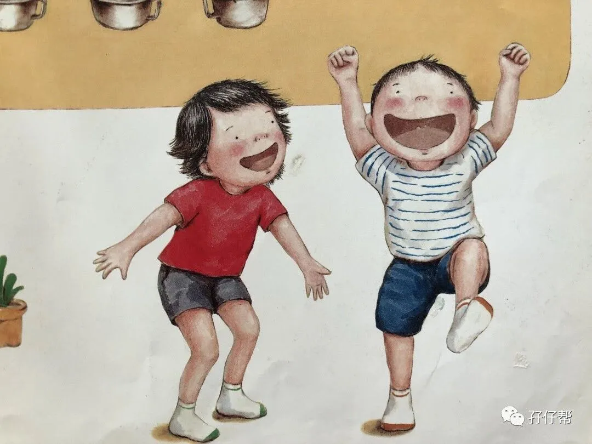

文|圆圈妈
图|来自网络，侵删
· 正 · 文 · 来 · 啦 ·
双胞胎教育群常会讨论两孩子的情绪问题，抱怨最多的莫过于双胞胎孩子之间吵架，打架那些破事，而且屡教不改，让人抓狂不已！今天这篇来探讨双胞胎手足相处之道，也是我看《二孩时代》这本书的读后感。
【01】
手足纷争不亚于屎尿屁横流
其实，何止是双胞胎家庭，只要是家有二孩以上的家庭，都会出现兄弟姐妹互相争吵打架的事情，可能双胞胎孩子在这问题上会更加突出些，毕竟两孩子年龄一样大，心智发育差不多，互动更多，乐趣更多，当然冲突也会更多。
我家是两个双胞胎男孩，4岁，正处于狗见了都嫌弃的阶段，港真，我在这方面的苦恼一点都不会比你们少！甚至更惨!
男孩的荷尔蒙让他们天生好斗，情绪也不如女孩稳定，兄弟间的相处相当于针尖与麦芒，这意味着他们的手足纠纷不是喜剧片，而是一部史诗般的好莱坞灾难片，而引起冲突的原因通常很滑稽。
有时是为了谁先玩新买的玩具，谈不拢，有时是讨论班上哪个女同学比较可爱，意见不一，有时纯粹是无聊，嘴巴寂寞，手痒，就是想干一架…
我每天像审判官一样，处理他们那些破纠纷，累得跟骆驼一样，有气无力！关键是磨破嘴皮子了，还不凑效。
我跟所有家长一样，对待这种“手足相残”总是想方设法去阻止，争抢玩具刚露一点苗头，我就扑过去把他们支开，其中一人霸占了所有玩具，我就严厉批评，然后巴啦啦地把他们教育一番…
可是，即便如此，哥俩那些吵吵闹闹，打打杀杀依然没有停过，反而随着年龄的增长愈演愈烈…
我常常在想，也许，从一开始，我的方向就错了！为何孩子们有纠纷了，我第一时间是要阻止呢？而不是想到接受呢？
也许，转变下方式，会不会有不一样的效果？
【02】
没有跟手足争吵过的童年是不完美
我想，家有兄弟姐妹的你也有相同经验吧，小时候与兄弟姐妹相处，时而快乐、时而争吵甚至打架。
我的原生家庭有四姐弟，上有两个姐姐，下有一个弟弟，排行老三的我，经常被姐姐欺负，而我也经常欺负弟弟。
可是，我们的姐妹姐弟情恰恰就是在抢玩具，抢零食，抢地盘…那些小打小闹间，生根发芽，根深蒂固！
即便是成年后各自成家了，我们依然会偶尔小聚一起，逛街，闲聊，甚至还会像小时候那样吵嘴， 互损…
我们的相处方式比普通朋友更普通，从不嘘寒问暖，但却比任何人都彼此关心着对方。
也许，这就是手足！这才是手足的正确打开方式！再好的闺蜜，死党，哥们，姐们情都敌不过血浓于水的那份手足情！
那么我们的双胞胎孩子们呢？他们那些日常小纠纷只是在走我们小时候走过的路线而已！
也许那些让我们伤透脑筋的“玩具争抢”，“空间争抢”，“游戏争抢”..对他们来说，再正常不过了，就好像一起吃饭睡觉一样，只不过是他们手足相处时另外一种表达方式罢了！
既然是孩子们的本色出演，我们又何必急着去涂抹掉呢？
有一个来自欧美高校的一则研究成果，你看了一定会大快人心！
平均算来，3-7岁的兄弟姐妹每小时会发生3.5次冲突，2-4岁的孩子之间发生冲突的次数最多，高达每小时6.3次，即每10分钟内超过1次。
看吧，别人家的孩子们都这样打打闹闹，我家的双胞胎孩子若是不起冲突，那才叫不正常呢！（此处应该来点幸灾乐祸的表情）
【03】
相爱简单，相处也不难！
儿童心理学家称，手足关系是最真实的社交预演。
你可以想象下， 手足相处就好比缩小版的社会互动，在孩子们没有入园之前，平日里都是两小家伙一起玩，那这个日夜相处也是个小集体的生活模式。
而双胞胎孩子得天独厚地比其他没有同伴一起玩耍的孩子提前享有这种社会互动体验，他们在家庭这样的「小社会」中经历了争执、抢夺、纠纷…
如果我们能趁此机会教导孩子们冷静自己的情绪、分析事件的因果、讨论适合的解决方法，把每天的手足冲突视为孩子的情绪处理及社交技巧训练，那么未来双胞胎孩子们进入学校后便具备与同伴相处的「经验值」，会比其他孩子更快融入到集体生活中。
还有，作为双胞胎父母，我们要乐观点，倘若低估了双胞胎孩子们天生的社交能力，那咱们就输了！
我们经常会看到，双胞胎孩子们上一秒还打得火热，下一秒就玩得很嗨，这说明他们完全可以在成人不干预的情况下自行解决。
玩得开心是他们最大的追求！
争抢打闹也好，互助合作也罢，都是他们为了满足这个愿望使用的策略方式之一。
我知道，可能有些方式会让我们成人接受不了，但如果孩子们都乐在其中！何不皆大欢喜呢！
手足之间的吵吵闹闹，是一场自然而然的「爱的练习曲」，孩子们在手足相处中，会有计较，会有忍让，会有分享，也会有彼此的照顾，这样的他们将来必定会成为有本事珍惜这得之不易缘份的人，成为一辈子有福的人。
【04】
圆圈妈妈训娃心得
你知道吗？
自从双胞胎出生后，除了他们睡着的时候，我觉得岁月静好，还有看着他们斗嘴打架也是一件赏心悦目的事情！
圆圈兄弟每次在一起玩玩具，都会吵起来，甚至打起来，虽然吵得凶，打得狠，但通常不会超过三分钟，上一秒撕逼，下一秒和好的情况已经司空见惯了！
有时候，当我要惩罚其中一个时，另一个受欺负的反而会跳出来跟我急。
#￥%！真让人无语到极点！
好想问，这到底是什么逻辑啊！我怎么感觉我才是那个巧舌根的好事者！我才是那个受害者！
反正经历数次的“热脸冷屁股”，我算是搞明白了！
最终的结局就是，不管我批评了谁，做出了什么宣判，对于双胞胎孩子来说，结果不重要，重要的是，我的兄弟，我的姐妹，只有我自己可以欺负，外人想欺负还得问过我的拳头！
我吃过亏后，就长记性了！
每次他们哥俩起冲突，我就在边上看着，不说话，凭经验觉得没啥大事发生，就闪一边去，多留点空间让他们自由发挥，也是为了安全起见，免得被不知哪里飞过来的积木砸到。
此处有一个小贴士：你可以躲在一旁，把他们打架的全过程录下来，事后播放给他们看，观察他们是什么反应，然后开启“复盘”模式（此秘方适用于2岁以上的双胞胎）
强烈建议，遇到双胞胎手足冲突，别杵在孩子面前瞎着急，瞎参合，瞎指挥！
不管你的双胞胎处于什么年龄，也不管你是出于保护的目的还是控制欲太强，在处理孩子们的手足纷争这件事情上，请尽量多给双胞胎留一个真实，公平的机会，让他们自己去解决！
做好旁观者的角色！
不冷不热，不咸不淡，不愠不火才是解决双胞胎孩子那些相爱相杀的正确处理方式！
当然，说的轻松，做着难，要达到这样的境界还需多修炼才行。
下一篇继续来探讨双胞胎家长们在面对双胞胎的冲突纠纷时，该如何机智应对！
-END-
今日互动话题
#你家双胞胎经常打架吗？#
评论区聊一聊呗！
一关注孖仔帮一




